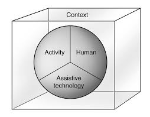
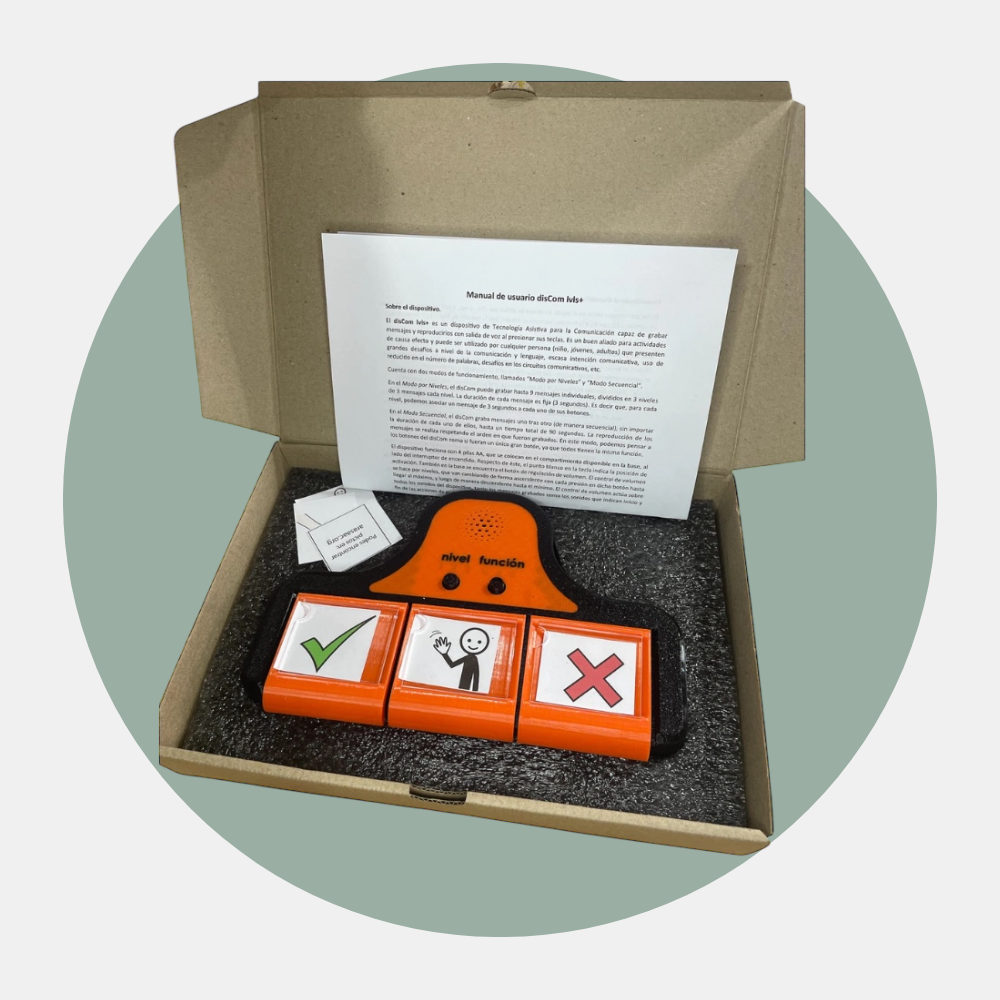
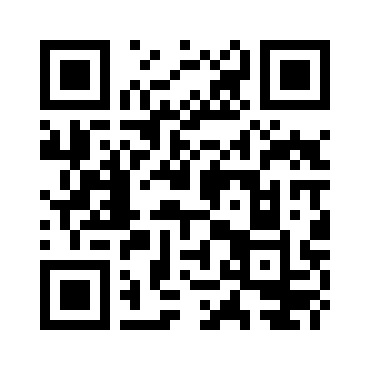

Tecnología Asistiva
+ Equipar para Equipar
Un recorrido por el proceso clínico, los dispositivos y las herramientas de acceso.
Por qué esto importa
Si la persona con discapacidad es realmente el centro, entonces lo que le pasa al equipo que la atiende no es un detalle. Es parte del mismo problema.
Un equipo mejor formado, con mejores herramientas y con capacidad para incorporar recursos nuevos, inevitablemente le ofrece más a esa persona. No hay forma de que no sea así.
Este curso es parte de eso.
Introducción General
Qué es la TA, marcos de evaluación, posicionamiento y metodología EpE.
¿Qué es la
tecnología asistiva?
Cualquier producto, sistema o estrategia que aumenta, mantiene o mejora las capacidades funcionales de una persona con discapacidad.
No es una categoría de objetos. Es una relación entre una persona, una necesidad y una herramienta. Un mismo dispositivo puede ser TA para alguien y no serlo para otra persona.
OMS
El foco está en la función, no en el dispositivo. Lo que importa es lo que la herramienta le permite hacer a esa persona.
RESNA
La TA incluye los servicios: evaluación, entrenamiento y seguimiento. Un dispositivo sin entrenamiento es clínicamente inútil.
Del no-tech al high-tech
TA específica
Diseñada para personas con discapacidad: pulsadores, comunicadores, eye trackers, sillas adaptadas.
Tecnología de uso general accesible
iOS, Android, Windows y macOS incluyen control por voz, lectores de pantalla, switch access y eye tracking. Gratuitos, siempre disponibles y en constante mejora.
La alta tecnología no es sinónimo de mejor tecnología. La más efectiva es la que realmente se usa.
Cuando la selección no fue centrada en el usuario y su entorno real, la tecnología termina en el cajón. Un dispositivo que se abandona no es TA: es una oportunidad perdida.
La solución más simple que funciona es siempre la mejor.
¿Por qué se sobredimensiona?
Entusiasmo con la tecnología · presión de fabricantes · deseo legítimo de "dar lo mejor".
La pregunta que debe guiar
¿Puede el entorno del usuario sostener esta tecnología? ¿La familia puede operarla? ¿Se usa fuera de la clínica?
Equipar para Equipar
El equipamiento sirve para evaluar y entrenar diferentes objetivos en diferentes situaciones. No se toman decisiones definitivas antes de tener información suficiente.
Versatilidad
Un dispositivo versátil cambia su modo de activación, tamaño o conectividad sin requerir un nuevo equipo para cada variante.
Productos derivados
El equipamiento base modular genera configuraciones que se extienden hacia nuevos objetivos o usuarios. Un núcleo tecnológico, múltiples soluciones.
El ciclo iterar → ajustar
Probar una configuración, observar la respuesta del usuario, ajustar y volver a probar. Ese ciclo es el proceso terapéutico.
Ingeniería biomédica
Puente entre necesidad clínica y solución técnica. El conocimiento que surge de la práctica clínica directa es cualitativamente diferente al del laboratorio.
Marcos de evaluación y toma de decisiones
HAAT · SETT · Feature matching · mFREE ·
Equipo interdisciplinario
Modelo HAAT

Framework SETT

Demasiado frecuentemente el proceso se invierte: se parte del dispositivo y se intenta adaptarlo al usuario.
Feature matching
El paso que convierte la evaluación en prescripción: comparar las necesidades y capacidades del usuario con las características técnicas de los dispositivos disponibles.
Características indispensables
Sin ellas el dispositivo no funciona para este usuario. Se definen antes de explorar opciones.
Ejemplo: si el usuario no tiene función manual, el sistema debe ser operable sin manos. No es negociable.
Características deseables
Mejoran la experiencia pero no son condición necesaria. Se consideran una vez garantizadas las indispensables.
Ejemplo: cámara integrada, conectividad Bluetooth adicional, etc.
Modelo mFREE
Partir de capacidades, no de déficits. Cada fase construye sobre la anterior. El ciclo se repite a medida que el usuario avanza.

El equipo interdisciplinario
El proceso de Tecnología Asistivaes necesariamente interdisciplinario.
| Profesional | Contribución principal |
|---|---|
| Terapeuta ocupacional | Desempeño ocupacional, posicionamiento, acceso motor, entorno domiciliario y laboral |
| Kinesiólogo / fisioterapeuta | Postura, tono muscular, rango de movimiento, sistemas de posicionamiento |
| Fonoaudiólogo / logopeda | Comunicación, prescripción y programación de sistemas de CAA, deglución |
| Médico fisiatra / neurólogo | Diagnóstico, pronóstico, manejo farmacológico del tono |
| Técnico / ingeniero en TA | Hardware y software, fabricación de adaptaciones, integración de sistemas |
| Familia / cuidadores | Sostén del sistema fuera de la clínica, implementación y carryover |
Posicionamiento y soporte postural
La base de cualquier evaluación de acceso a tecnología asistiva.
La primera
intervención de TA
El posicionamiento determina el tono muscular, la disponibilidad de movimiento voluntario, la fatiga y la calidad del control motor distal.
Una persona con PC espástica puede mostrar un movimiento perfectamente funcional cuando está bien posicionada — el mismo movimiento puede desaparecer con una postura inadecuada.

Componentes del posicionamiento sentado
Se evalúa y ajusta de proximal a distal: cada segmento es la base del siguiente.
① Pelvis
Punto de partida. Posición neutra. Cuñas, apoyos laterales y arneses antideslizantes. La profundidad del asiento es crítica.
② Tronco
Soporte mínimo necesario. El objetivo no es inmovilizar: es dar estabilidad para liberar los segmentos que necesitan moverse.
③ Pies
Apoyapiés en ángulo y altura correctos. Sin apoyo, la tensión de la cadena posterior sube hasta la pelvis y el tronco.
④ Cabeza
Fundamental para control por cabeza o trackeo ocular. Apoyacabezas con ajuste en múltiples ejes.
⑤ Mesa escotada
No solo superficie de trabajo: herramienta de posicionamiento. Reduce la carga en hombros y mejora el control motor distal.
Posicionamiento en otros entornos
La evaluación de acceso no se limita a la silla de ruedas. El usuario necesita acceso en todos los entornos donde realiza actividades.
En cama
Inclinación del respaldo, almohadas de posicionamiento, angulación del dispositivo. Muchos usuarios tienen mejor control en semifowler (30–45°) que a 90°.
En silla convencional
Almohadones de soporte lateral, cuñas de asiento portátiles y mesas escotadas desmontables pueden replicar el posicionamiento de la silla de ruedas.
En el suelo
Para niños pequeños: decúbito ventral con apoyo en codos puede ser óptimo para acceder a dispositivos colocados a su nivel.

Trabajo compartido
Trabajar en equipo — y en el mismo momento, no en sesiones separadas — produce resultados muy superiores a la evaluación individual.
Kinesiólogo / fisioterapeuta
Análisis biomecánico del tono, la espasticidad y el rango articular. Sistemas de posicionamiento en silla de ruedas.
Terapeuta ocupacional
Perspectiva del desempeño ocupacional y el acceso. ¿Qué debe poder hacer el usuario desde esa posición?
Posicionamiento del dispositivo
El dispositivo se mueve hacia la persona. Nunca al revés.
Las 4 variables de posicionamiento
El posicionamiento del dispositivo afecta la demanda motora, la carga postural y la calidad del acceso. Las tres simultáneamente.
Distancia
Adultos: 40–70 cm. Trackeo ocular: 50–70 cm exactos (especificados por el fabricante). En pediátricos: menor, compensado con tipografía más grande.
Altura
Cabeza en posición neutra o leve inclinación hacia abajo (10–20°). El centro de la pantalla a la altura de los ojos o levemente por debajo.
Ángulo de inclinación
10–20° hacia atrás. Trackeo ocular: pantalla más vertical. Acceso táctil: mayor tolerancia de ángulo.
Lateralidad
Centrado en el eje visual primario. En hemiparesia: leve desplazamiento hacia el lado funcional. Evitar asimetrías que aumenten el tono.
Montaje en sedestación y en cama
En silla de ruedas
Sistema completo: abrazadera base + brazo articulado + plataforma con liberación rápida. La plataforma debe poder retirarse sin herramientas.
Mesa escotada
Agregar cuña de 20–30° para mejorar el ángulo de visión y reducir carga cervical.
Semifowler (30–45°)
Posición más funcional en cama. Brazo articulado fijo a barra lateral o mesa puente. Pantalla a 40–60 cm.
Decúbito dorsal
Soportes articulados que posicionan el dispositivo sobre el torso. Pantalla directamente sobre los ojos.
Consideraciones en población pediátrica
El dispositivo no es solo herramienta funcional: es un estímulo visual y de aprendizaje. Su posición debe facilitar la interacción natural sin interrumpir el contacto visual con los cuidadores.
Tamaño de pantalla
Proporcional al niño y al desarrollo visual. Un iPad 12,9" puede ser demasiado grande para un niño de 3 años en cochecito.
Posición respecto al cuidador
Levemente hacia un lado — no directamente frente a la cara — para mantener contacto visual simultáneo con la pantalla.
Alcance activo
Observar cómo el niño extiende el brazo hacia un objeto que desea. Esa distancia y ese ángulo son el punto de partida.
Posición en el suelo
Soporte inclinable de perfil bajo. Cuñas de posicionamiento con soporte integrado para tablet.
Sistemas de montaje y documentación
¿Por qué es crítico documentar?
En entornos multidisciplinarios, cualquier profesional puede mover el dispositivo. En usuarios no verbales, nadie puede reportar que "el iPad está en el lugar equivocado".
Evaluación del movimiento funcional
Identificar el mejor punto de acceso: la parte del cuerpo con la que el usuario puede controlar un dispositivo de manera confiable, eficiente y sostenible.
Exploración sistemática de sitios
Mano D/I · muñeca · codo · hombro · cabeza (lateral, frontal) · pie · rodilla · boca. Un movimiento que parece ineficaz en la primera sesión puede mejorar con práctica.
| Diagnóstico | Consideración clave |
|---|---|
| PC espástica | Debounce generoso, posicionamiento crítico |
| PC discinética | Acceso por liberación, sitios con menor movimiento involuntario |
| ELA temprana | Planificar progresión → pulsador → eye tracking |
| LM cervical alta | Sip & puff, mentón, cabeza, voz |
| ACV hemiparesia | Lado no afectado, mouse adaptado, mano no dominante |
Acceso Indirecto
Pulsadores: tipos, características, criterios de selección y montaje.
¿Qué es un pulsador?
Una señal binaria: activado o no activado. Esta simplicidad es su fortaleza: permite que cualquier movimiento voluntario y confiable del cuerpo, por pequeño que sea, se convierta en una señal de control.
No es un objeto con una forma fija
Un pulsador puede responder a presión, soplo, succión, sonido, proximidad o contracción muscular (EMG). Cualquier fenómeno físico que el usuario pueda generar de forma voluntaria.
El disMouse como interfaz universal
Al aceptar señales a través de sus conectores externos, funciona como puente entre cualquier sensor y el sistema operativo. Un sensor a medida + una interfaz configurable.

Tipos de pulsadores por interfaz de conexión
Plug (analógicos) — jack 3,5 mm
Cierran un circuito al activarse. Intercambiables entre marcas y modelos. Requieren un intermediario (disMouse, interfaz) para conectarse a sistemas digitales.
Normal abierto (NO): acción al presionar.
Normal cerrado (NC): acción al soltar — útil cuando liberar es el movimiento más controlado.
USB
Se presenta como dispositivo HID (mouse). El sistema operativo lo reconoce automáticamente, sin configuración adicional.
En tablets: simula un toque en el centro de la pantalla. Los modelos dis+capacidad incluyen entrada jack 3,5 mm para un segundo botón independiente — clic derecho con pulsador plug.
Bluetooth configurable — disButton
Configuración completa desde el navegador (Configurador dis+). Puede emular cualquier tecla, combinación o acción de mouse.
Modos de activación: al presionar · al soltar · tras pulsación sostenida.
Debounce ajustable: filtra activaciones accidentales por temblor o espasticidad.
Clasificación por mecanismo de activación
Pulsadores de presión
Los más habituales. Varían en:
Tamaño: a mayor tamaño, menor demanda de precisión motora.
Fuerza de activación: desde <50 g (Microlight) hasta presión moderada o alta. Se ajusta al perfil de fuerza del usuario.
Recorrido: mayor recorrido = más retroalimentación táctil; menor recorrido = mejor para rango de movimiento reducido.
Los pulsadores son, en esencia, sensores: detectan una señal y la convierten en una activación.
Soplo / succión
Sip & puff. Indicado en LM cervical alta.
Sonido
Sensores de voz o ruido ambiental.
Proximidad
Sin contacto físico necesario.
EMG
Contracción muscular detectada electrónicamente.
Criterios de selección
Nunca seleccionar un pulsador sin probarlo en las condiciones reales de uso. Un pulsador ideal en la evaluación puede fallar por la posición al comer, la fatiga del final del día o los cambios de tono según el estado emocional.
| Factor | Preguntas clave |
|---|---|
| Control motor | ¿Cuánta fuerza puede aplicar? ¿El movimiento es preciso o amplio? ¿Hay movimientos involuntarios que podrían activar accidentalmente? |
| Fatiga | ¿Durante cuánto tiempo puede mantener el uso? ¿Qué tipo de activación (presión vs. soplo) fatiga menos? |
| Cognición | ¿Requiere retroalimentación táctil clara para confirmar la activación? ¿Puede distinguir diferentes tipos (sip vs. puff)? |
| Entorno | ¿El ruido del pulsador es un problema en ese contexto? ¿Es socialmente aceptable? |
| Posicionamiento | ¿En qué parte del cuerpo se ubicará? ¿El montaje requerido es viable en todos los entornos de uso? |
Montaje y posicionamiento
Un pulsador perfectamente seleccionado pero mal posicionado, falla. El montaje determina en gran medida el éxito del acceso.
Componentes de un sistema de montaje en silla de ruedas:
Abrazadera base
Se fija a la barra de la silla con tornillos o palanca sin herramienta.
Brazo articulado
Ajusta posición en múltiples dimensiones: altura, distancia, ángulo. RAM Mount y Loc-Line son referencias en TA por su flexibilidad y bloqueo firme.
Soporte terminal
Sostiene el pulsador con ángulo ajustable para presentar la superficie activa óptimamente al movimiento del usuario.
Brazo articulado
dis+capacidad
Se fija a cualquier superficie con borde. Ajustable en altura, ángulo e inclinación. Se bloquea con una única perilla.
Último: el brazo.

Posicionamiento según el sitio de acceso
El posicionamiento óptimo varía según la parte del cuerpo que el usuario usa para activar.
Mano / dedos
Sobre la bandeja, donde la mano descansa naturalmente. En horizontal (presión vertical) o en ángulo (presión lateral), según el tipo de movimiento.
Cabeza
Junto a la mejilla o la sien del lado más funcional. La superficie activa debe ser tangente a la trayectoria del movimiento, no perpendicular. Minimiza la fuerza de activación.
Rodilla
En el apoyabrazos o soporte lateral, a la altura de la rodilla. Activado por abducción de cadera o extensión de rodilla. Útil cuando las manos no son funcionales pero las piernas conservan movimiento voluntario.
Pie
En el apoyapiés o en el suelo, orientado para recibir flexión plantar. Indicado en usuarios con función de miembro inferior preservada (ej. LM incompleta).

Otros contextos y seguridad
El pulsador necesita ser accesible en todos los entornos de uso, no solo en la silla de ruedas.
Cama
Soportes articulados o abrazaderas en la barra lateral. Puede necesitar reposicionarse según si el usuario está semi-incorporado o acostado.
Mesa / escritorio
Soportes con ventosa o peso. Montaje temporal y reubicable sin daño a la superficie.
Transporte
El pulsador debe poder fijarse de forma segura durante el traslado, o retirarse fácilmente cuando no se usa.
El montaje debe revisarse periódicamente. Un pulsador que se afloja puede producir activaciones inesperadas — en una silla eléctrica, esto tiene implicaciones directas de seguridad.
Accesibilidad en iOS y Android
Cómo los dispositivos móviles se convierten en entornos de acceso adaptado.
Mapa de herramientas
Antes de evaluar qué herramienta usar, conviene saber qué dispositivo tiene el usuario. Si el usuario ya tiene uno, la decisión está tomada: el trabajo del terapeuta es sacarle el máximo partido a lo que hay.
| Función | iOS / iPadOS | Android |
|---|---|---|
| Escaneo con pulsadores | Switch Control | Switch Access |
| Cursor con mouse / trackball | AssistiveTouch | Menú de accesibilidad |
| Dwell / clic por permanencia | Dwell Control (vía AssistiveTouch) | Auto-click (Interacción y destreza) |
| Control por voz | Voice Control (nativo) | Voice Access (requiere instalación) |
| Eye tracking nativo | Sí (iOS 18+, FaceID) | No nativo |
| Head tracking sin hardware | Sí (cámara frontal) | No nativo |
| Atajo de accesibilidad | Triple clic botón lateral | Botón flotante o atajo de volumen |
Switch Control y Switch Access
Un resaltado recorre la pantalla. El usuario activa el pulsador cuando llega al elemento deseado. Eso es el escaneo.
1 pulsador — automático
El sistema avanza solo. Menor demanda motora.
2 pulsadores — dirigido
Uno avanza, el otro confirma. Mayor velocidad y autonomía.
Velocidad de escaneo
Empezar en 3–4 s y reducir. Alta tasa de error = demasiado rápido.
Patrón
Lineal: elemento a elemento. Fila-columna: reduce activaciones en grillas grandes.
El disMouse en iOS
Conectado por USB (adaptador OTG) o Bluetooth, funciona como dispositivo apuntador dentro de AssistiveTouch. Dos capas que se potencian: el Configurador define qué hace cada botón; iOS define qué acción del sistema ejecutan.
| Botón | Configurador dis+ | Función en iOS |
|---|---|---|
| Flechas ↑↓←→ | Mouse → Cursor | Mover el cursor por la pantalla |
| Botón Rojo | Mouse → Clic izquierdo → Al presionar | Toque / selección |
| Botón Azul | Mouse → Clic derecho → Al presionar | Menú contextual |
| Botón Naranja | Mouse → Scroll arriba → Al presionar | Desplazar hacia arriba |
| Botón Celeste | Mouse → Scroll abajo → Al presionar | Desplazar hacia abajo |
Cursor + permanencia (Dwell / Auto-click)
Para usuarios que mueven el cursor pero no tienen un segundo punto de acceso confiable. El sistema selecciona automáticamente al quedarse quieto sobre el elemento.
Dwell Control · iOS
AssistiveTouch → Dwell Control. Empezar en 1,5 s.
Auto-click · Android
Accesibilidad → Interacción y destreza → Clic automático. Empezar en 0,8 s.
Velocidad del cursor
Ajustar en dos lugares: Configurador dis+ (aceleración) + sistema operativo (velocidad máxima).
¿iOS o Android?
La elección no debería basarse en las preferencias del terapeuta, sino en la situación concreta del usuario.
Elegir Android si...
El costo es determinante. Un tablet Android de gama media es significativamente más económico que un iPad.
Elegir iOS si...
La CAA es prioritaria (Grid 3, Proloquo2Go, mejor integración con Switch Control). Se necesita Head Tracking sin hardware adicional. El usuario es candidato a Eye Tracking nativo (iOS 18+).
En cualquier caso...
La combinación disMouse + accesibilidad del sistema operativo funciona en ambas plataformas. La lógica clínica de configuración es la misma.
Buenas prácticas en accesibilidad móvil
Los errores más frecuentes son los más fáciles de prevenir si se anticipan.
Accesibilidad en Windows y macOS
Panorama de herramientas nativas y de terceros para el uso funcional de la computadora.
Lo que ofrecen de forma nativa
Para muchos usuarios las herramientas nativas son suficientes; para otros, son la base sobre la que se agrega equipamiento especializado.
| Función | Windows 11 | macOS |
|---|---|---|
| Barrido con pulsadores | ❌ Requiere software de terceros | ✅ Switch Control integrado |
| Eye tracking | ✅ Eye Control (hardware compatible) | ❌ No nativo |
| Head tracking sin hardware | ❌ Requiere software de terceros | ✅ Head Pointer (cámara integrada) |
| Control por voz | ✅ Voice Access | ✅ Voice Control |
| Dwell / clic por permanencia | ⚠️ Solo funcional con software de terceros | ✅ Integrado |
| Expresiones faciales como clic | ❌ No nativo | ✅ Sonrisa, boca abierta + Head Pointer |
Software de barrido para Windows
Para control completo de Windows con uno o dos pulsadores, se necesita software que interprete las señales y las traduzca en acciones del sistema.
Rata Plaphoons — gratuito
Referente histórico (Projecte Fressa). Emula todas las funciones del mouse mediante barrido automático (1 pulsador) o dirigido (2). Compatible con cualquier software de Windows.
Limitación: diseñado para Windows XP/7. Puede presentar inestabilidades en versiones modernas. Sin actualizaciones activas.
MPB — Mouse por Barrido — gratuito
Alternativa similar (Antonio Sacco). Manejo completo del puntero con un único pulsador. Trabaja en modo residente sin interferir con otros programas.
CrossScanner — pago
Solución comercial más completa (RJ Cooper). Control total de Windows con 1 o 2 pulsadores: menús, arrastrar y soltar, teclado en pantalla integrado.
Tracky Mouse
Controla el cursor con el movimiento de la cabeza usando únicamente la cámara web. Dwell clicking integrado. Gratuito, sin drivers, sin instalación especial.
El rol de la ingeniería biomédica
Implementar Tracky Mouse como librería en una aplicación web requiere leer documentación técnica y ajustar los parámetros al perfil motor del usuario. Es exactamente el tipo de tarea del ingeniero biomédico en el equipo: convierte la evaluación clínica en una solución técnica concreta, sin costo de licencia.
Acceso Directo
Del cuerpo a la pantalla: opciones, adaptaciones y el disMouse como herramienta clínica.
El acceso directo es el primer escalón
El usuario toca o señala directamente el elemento que quiere. Sin escaneo, sin intermediarios. Es más rápido y menos demandante cognitivamente. Se evalúa primero.
Si no puede, o solo parcialmente → se adapta el acceso directo antes de pasar a métodos indirectos.
Cualquier parte del cuerpo puede ser la interfaz
El punto de acceso lo define el usuario, no el dispositivo.
Dedo índice
Lo más habitual. Si no hay aislamiento, el resto de la mano actúa como guía.
Mano / puño
Para control grueso de muñeca y codo, sin aislamiento de dedo.
Otros dedos / nudillo
Cuando la extensión no es posible pero sí la flexión.
Pie
Para usuarios sin función en miembros superiores. Completamente válido.
Codo
Cuando hay movimiento de barrido de brazo pero sin control distal.
Cuando el teclado estándar no alcanza
Expandido
Teclas grandes. Para temblor o espasticidad moderada.
Reducido
Rango muy limitado con buen control fino.
Una mano
Disposición optimizada para uso unilateral.
Membrana
Superficie plana, sin fuerza de recorrido mecánico.
Sobreteclado
Cubierta con orificios superpuesta a teclado o pantalla táctil. Cada apertura aísla una sola tecla o zona.

El sistema operativo como primera TA
iOS, Android y Windows ofrecen herramientas gratuitas y potentes. Son el primer paso para perfiles de acceso leve a moderado.
Dwell (permanencia)
Activa al quedarse quieto sobre un área. Para temblor o arrastre involuntario.
Release time
La selección se registra al retirar el dedo, no al tocar. Equivalente al modo "Al soltar" del disMouse.
Touch accommodation
Filtra toques muy breves o acepta solo los mantenidos. Lógica similar al debounce.
AssistiveTouch · iOS
Reemplaza gestos complejos por secuencias simples o un menú superpuesto.
Misma función, mecánica adaptada
El mouse estándar exige agarre, desplazamiento y coordinación ojo-mano simultáneos. Cualquier alteración en una de estas habilidades puede hacerlo inaccesible.
Mouse adaptado
Botones de clic separados del control del cursor. Cada función se ubica donde sea accesible.
Joystick
Palanca → cursor. Adaptable en tamaño y forma para distintos tipos de agarre o control con mentón.
Trackball
La bola gira; el dispositivo no se mueve. Se controla con cualquier parte de la mano.
Touchpad
Arrastre sin agarre. Velocidad, zona de desplazamiento y presión mínima son configurables.
El disMouse como herramienta de evaluación
Un dispositivo que acompaña evaluación, entrenamiento y seguimiento sin ser reemplazado.
Un dispositivo, múltiples momentos
Configurable en tiempo real — sin herramientas ni reinicio — permite atravesar evaluación, entrenamiento y seguimiento sin cambiar de objeto físico.
Diseño físico con lectura clínica
Botones amplios y bajo relieve
Reduce la demanda de precisión. Determinante en temblor o control grueso.
Conectores para pulsadores externos
Distintas funciones desde distintas partes del cuerpo, sin modificar el configurador.
Ventosas + cubierta tipo sobreteclado
Fija el dispositivo y aísla los botones. Correcciones físicas sin tocar el software.
Feedback multimodal · Bluetooth
Lumínico, sonoro y vibratorio. Inalámbrico: el dispositivo va donde lo necesita el usuario.

Modo de activación: qué parte del gesto es la acción
Al presionar
Acción al inicio del contacto. Para usuarios con buen control del inicio del movimiento. Cualquier toque genera la acción.
Al soltar
Acción al liberar. Para espasticidad o usuarios que descansan la mano. El momento de liberación es la acción intencional.
Bloqueable
Pulsación sostenida activa/desactiva la función de forma continua. Permite arrastrar sin dos acciones simultáneas.
Debounce: filtrando el ruido motor
Tiempo mínimo sin perturbaciones antes de registrar una activación. Filtra temblor, espasticidad y variabilidad temporal del gesto.
Más de 500 ms puede ser inaccesible para fuerza reducida o temblor persistente.
En "Al presionar"
Mide inactividad desde el último contacto. El contador se reinicia con cada roce. El temblor continuo puede bloquear la activación.
En "Al soltar"
Mide tiempo entre presión y liberación. Si se suelta antes del umbral, la acción no ocurre.
Complejidad incremental
Iniciar con un solo botón. Validar ese acceso. Agregar funciones de a una, a ritmo del desempeño observado.
Del consultorio al domicilio
El usuario aprende en sesión, pero en casa las condiciones cambian. Si la familia no puede reconfigurar, el sistema se vuelve frágil.
Del mouse al pulsador
Al desactivar las flechas y configurar los botones, el disMouse se convierte en un pulsador USB multifunción. El hardware es el mismo; la configuración, no.
Pulsador externo
Se conecta al conector correspondiente y cumple exactamente la misma función que el botón físico — sin modificar el configurador.
Modos de barrido desde el disMouse
Desde el firmware, sin instalar software adicional. Clave en Android e iOS donde el software de barrido de escritorio no está disponible.
Barrido Dirigido · Shift + Rojo
2 pulsadores. Un botón avanza, otro confirma. El usuario controla el ritmo. Sin presión temporal.
Barrido Automático · Shift + Naranja
1 pulsador. El ciclo avanza solo cada 1,5 s. El usuario activa cuando se ilumina el paso deseado.
Modo Snake · Shift + Azul
1 botón, cursor completo. La flecha derecha mueve el cursor; cada pulsación rota la dirección en ciclo.
Comunicación Alternativa Aumentativa
Sistemas, dispositivos, vocabulario y herramientas para la comunicación funcional.
¿Qué es la CAA?
Conjunto de estrategias, técnicas y herramientas que complementan o reemplazan el habla cuando esta es insuficiente para satisfacer todas las necesidades comunicativas.
Aumentativa
Se suma al habla existente para ampliarla.
Alternativa
Reemplaza el habla cuando no existe o es ininteligible.
La regla de oro: multimodalidad
Las personas sin discapacidad comunicamos de forma multimodal: palabras, gestos, expresiones, entonación. El usuario de CAA tiene el mismo derecho.
"La CAA inhibe el habla"
Falso. La evidencia muestra lo contrario: la CAA apoya y a veces facilita el desarrollo del habla.
"Hay que esperar cierta edad"
No existe umbral mínimo. La comunicación es un derecho desde el nacimiento.
"Necesita saber leer"
La mayoría de los sistemas usan símbolos pictográficos que no requieren alfabetización.
"Si puede hablar un poco, no necesita CAA"
El habla insuficiente para todas las necesidades justifica la CAA.
El valor de la baja tecnología
No se descarga, no se rompe, no requiere conectividad ni capacitación técnica. Cuesta una fracción de un dispositivo electrónico.
Punto de partida ideal
Permite explorar vocabulario y estrategias de acceso sin el costo ni la complejidad del dispositivo electrónico.
Sistema de respaldo imprescindible
Cuando el dispositivo de alta tecnología falla, el tablero de papel sigue funcionando.
CAA a lo largo de la vida
Lactancia, escuela, adultez, condiciones adquiridas (ACV, ELA, demencia). Los sistemas se adaptan a cada etapa.
Tableros de comunicación
Una superficie con símbolos, palabras o letras que el usuario señala. El tipo más simple de CAA con ayuda.
Tamaño y contraste
Símbolos suficientemente grandes y de alto contraste si hay baja visión.
Número de elementos
No más de lo que el usuario puede manejar cognitivamente. Empezar con 2–4 y escalar.
Organización
Elementos más frecuentes en posiciones más accesibles: centro o esquina superior izquierda.
Vocabulario equilibrado
Core: alta frecuencia y uso general. Fringe: específico al contexto y a la persona.
Media tecnología: el VOCA
Dispositivos de voz grabada (VOCAs): graban mensajes reales y los reproducen al presionar un botón. La voz que el usuario escucha es la de alguien conocido — un valor clínico y emocional que la síntesis no puede igualar.
disCom lvls+
Funciona con pilas. Tres botones de mensaje, selector de nivel y selector de función (Grabar · Reproducir · Borrar).

Modo por Niveles
Tres botones independientes × tres niveles = tablero de comunicación con salida de voz. Cada nivel es un contexto diferente: aula, merienda, patio — sin cambiar el hardware.
Modo Secuencial
Los tres botones actúan como uno solo: cualquier pulsación avanza al siguiente mensaje de una cadena grabada. El usuario controla cuándo avanzar, no qué elegir.
Casos de uso
Rutinas estructuradas · narración de eventos · presentaciones grupales · instrucciones paso a paso.
Indicación clínica
Usuarios que no pueden seleccionar entre opciones pero sí controlan un único movimiento voluntario.
Un solo botón
En modo secuencial con un único mensaje, o en modo por niveles con solo un botón activo: el disCom funciona como VOCA de mensaje único.
El disCom como herramienta de evaluación
Antes de prescribir CAA de alta tecnología, conviene validar que el usuario comprende causa-efecto comunicativa, puede discriminar opciones y tiene motivación para comunicarse.
Selección, organización y principios de vocabulario para sistemas de CAA
Vocabulario core y fringe
El core es el 75–80% de todo lo que decimos: palabras funcionales (verbos, pronombres, adjetivos básicos) usables en cualquier contexto. El fringe es específico a personas, lugares y temas concretos.
Core: posición estable
El usuario desarrolla memoria motora de la posición. Si el sistema cambia las palabras de lugar, ese aprendizaje se pierde.
Fringe: páginas temáticas
Accesible desde la página principal. Actualizable por contexto sin mover el vocabulario core.
La combinación
"Quiero" (core) + "pizza" (fringe). "No me gusta" (core) + "el fisio de los martes" (fringe). La CAA efectiva tiene acceso a ambos.
Número de elementos y complejidad
La cantidad de elementos debe ser la mayor que el usuario pueda manejar eficientemente. Más no siempre es mejor.
Criterios de selección del sistema
Método de acceso
¿El sistema es operable con el método de acceso del usuario (touch, pulsador, eye gaze, head mouse)?
Vocabulario
¿Organiza el vocabulario de una manera que tenga sentido para las necesidades del usuario?
Robustez y portabilidad
¿Puede soportar el uso cotidiano? ¿Peso y tamaño adecuados?
Soporte y costo
¿Hay soporte técnico local? ¿Hay mecanismos de cobertura (seguro, gobierno, ONG)?
Modelado del lenguaje: ALI
Si queremos que el usuario use la CAA, los comunicadores que lo rodean deben usar ese mismo sistema cuando hablan con él. Así como los niños aprenden el habla porque escuchan habla, los usuarios de CAA aprenden usándola cuando ven a otros comunicarse con ella.
Usar el sistema del usuario
Modelar en el dispositivo del usuario, no verbalmente ni con un sistema diferente.
Contextos naturales
Durante el juego, la merienda, las rutinas. No como ejercicio separado.
Sin exigir imitación inmediata
El modelado es exposición, no instrucción. Se da el ejemplo y se da tiempo.
El entorno es parte del equipo
Familia, cuidadores, docentes y pares deben ser capacitados. La mayor parte del tiempo del usuario no transcurre en la clínica.
Principio de disponibilidad permanente
Un dispositivo de CAA que no está disponible cuando se necesita no es una herramienta de comunicación: es un objeto. El sistema debe estar disponible en todo momento, en todos los contextos, sin depender de que alguien recuerde ponerlo al alcance.

AsTeRICS Grid
CAA de alta tecnología, gratuita, multiplataforma y accesible con cualquier método de entrada.
AsTeRICS Grid
Aplicación web gratuita y de código abierto para CAA. Funciona en el navegador — sin instalación — en Windows, macOS, Android, iOS y Linux. Dirección: grid.asterics.eu
Tablero
Cuadrícula de elementos visuales. Cada elemento tiene imagen, texto, color y una o más acciones asignadas.
Acciones
Pronunciar texto · grabar voz · navegar a otro tablero · acumular frase · acción del sistema.
Tablero global
Se muestra sobre todos los demás. Para vocabulario core (sí, no, quiero, ayuda) que debe estar siempre visible.
Por qué en este curso
Gratuito + multiplataforma + soporte real de acceso indirecto. Un usuario puede pasar de toque a barrido sin cambiar de sistema.
Acceso: toque directo o clic
Modo predeterminado. Sin configuración especial. Los elementos se seleccionan tocando la pantalla o haciendo clic.
Clic / toque simple
Comportamiento habitual. Acceso directo sin restricción motora significativa.
Doble clic
Para usuarios que tienden a activaciones involuntarias con un solo toque.
Seleccionar al presionar
Activa el elemento en el momento de presión, sin esperar a soltar. Útil con eye tracking + pulsador externo.
Acceso: barrido (Scanning)
Los elementos se agrupan y el resaltado los recorre. El usuario activa cuando el grupo o elemento deseado está resaltado. Mismo principio que Switch Control (iOS) y Switch Access (Android).
Barrido automático · 1 pulsador
El resaltado avanza solo cada N segundos. El usuario solo selecciona.
Barrido paso a paso · 2 pulsadores
Un botón avanza, otro selecciona. El usuario controla el ritmo.
1 pulsador, 2 funciones
Pulsación corta = avanzar · pulsación larga (hold duration) = seleccionar. Un solo punto de acceso, dos funciones.
Parámetros clave
Timeout: pausa entre acciones (equivale al debounce). Duración de pulsación: tiempo mínimo para registrar.
Acceso: entrada por dirección
Usa 2–5 eventos: uno para seleccionar y hasta cuatro para moverse (↑↓←→). El resaltado salta directamente al elemento más cercano en la dirección indicada.
Acceso: entrada secuencial
Exactamente 2 eventos: uno para avanzar al siguiente elemento y otro para seleccionar el actual. Resalta los elementos de uno en uno, sin agruparlos.
Acceso: entrada Huffman
Cada elemento recibe un código único de eventos. Los elementos más frecuentes tienen códigos más cortos. Con el disMouse (4 botones + 4 flechas = 8 eventos), hasta 8 elementos con acceso directo de un solo toque.
Sin barrido
El usuario presiona el botón que corresponde al elemento. No espera, no navega filas.
Más eficiente
Para tableros de 4–8 elementos con igual número de movimientos voluntarios disponibles.
Más de 8 elementos
Codes de 2 pasos. El sistema filtra visualmente los elementos restantes tras el primer evento.
Acceso: permanencia (Dwell)
Activa el elemento cuando el cursor permanece quieto sobre él el tiempo configurado. Sin pulsación adicional. Para usuarios que pueden mover el cursor pero no tienen un segundo punto de acceso confiable para el clic.
Tiempo de permanencia
Empezar en 1.500 ms y ajustar según el desempeño. Demasiado corto genera activaciones involuntarias.
Leer elemento activo
Anuncia en voz alta el elemento al pasar sobre él. Feedback auditivo sin seleccionar.
Con disMouse
Flechas en modo cursor → el usuario mueve el cursor. Dwell activo → el sistema selecciona al detenerse. Sin necesidad de botón de clic.
disMouse para AsTeRICS Grid
| Método en AsTeRICS Grid | Flechas disMouse | Botones disMouse |
|---|---|---|
| Cursor + dwell | Modo cursor | No necesarios (o backup) |
| Cursor + clic | Modo cursor | Rojo = Clic izquierdo |
| Barrido automático | — | Rojo = Espacio / Enter |
| Barrido paso a paso | — | Rojo = Avanzar · Azul = Seleccionar |
| Entrada por dirección | Modo teclas ↑↓←→ | Rojo = Espacio (seleccionar) |
| Huffman (hasta 8 elem.) | Teclas 5–8 | 4 botones = teclas 1–4 |
Seguimos en contacto
Gonzalo Nanzer · dis+capacidad

Contanos qué te llevás y qué mejorarías.